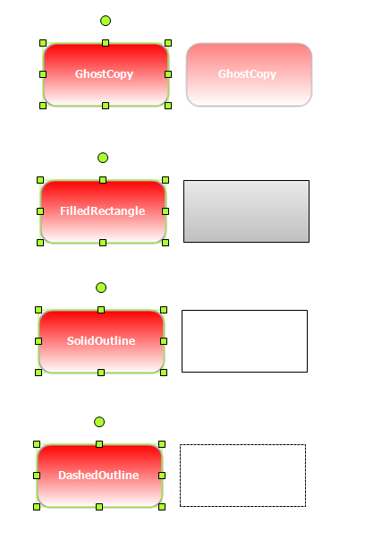

Essential Diagram for Windows Forms provides dragging, resizing, and rotation styles such as ghost copy, filled rectangle, solid outline, and dashed outline, for nodes. These styles provide better visual effect to your diagram and increase the performance speed of the diagram while dragging, rotating, or resizing nodes.
Properties
Table 6: Properties Table
|
Property |
Description |
Type |
Data Type |
Reference links |
|
ResizingStyle |
Gets or sets resizing style for the rendering helper |
NA |
RenderingHelperStyle |
NA |
|
DraggingStyle |
Gets or sets dragging style for the rendering helper |
NA |
RenderingHelperStyle |
NA |
|
RotatingStyle |
Gets or sets rotating style for the rendering helper |
NA |
RenderingHelperStyle |
NA |
Applying Styles to Rendering Helper
The following code example illustrates how to apply styles to the rendering helper while resizing, dragging, and rotating nodes.
|
[C#] //Specify dragging, resizing, and rotation styles to the rendering helper diagram1.Controller.DraggingStyle = RenderingHelperStyle.SolidOutline; diagram1.Controller.ResizingStyle = RenderingHelperStyle.GhostCopy; diagram1.Controller.RotatingStyle = RenderingHelperStyle.DashedOutline;
|
|
[VB] 'Specify dragging, resizing, and rotation styles to the rendering helper diagram1.Controller.DraggingStyle = RenderingHelperStyle.SolidOutline diagram1.Controller.ResizingStyle = RenderingHelperStyle.GhostCopy diagram1.Controller.RotatingStyle = RenderingHelperStyle.DashedOutline
|

Figure 121: Diagram nodes with different styles